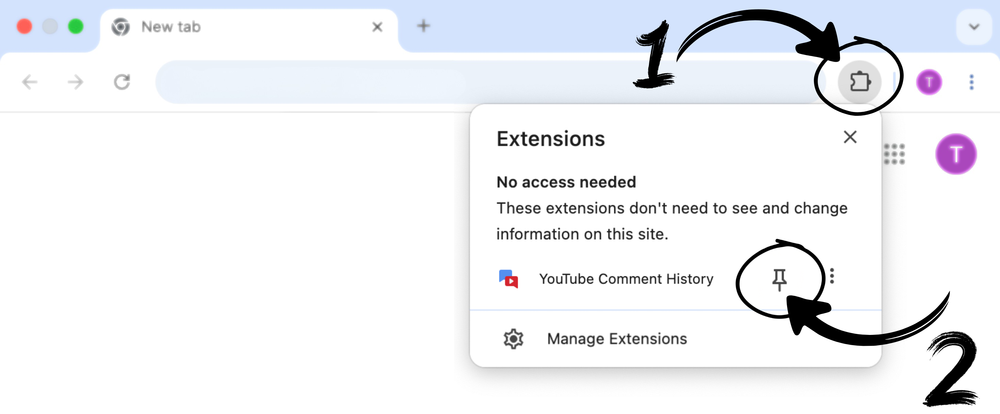
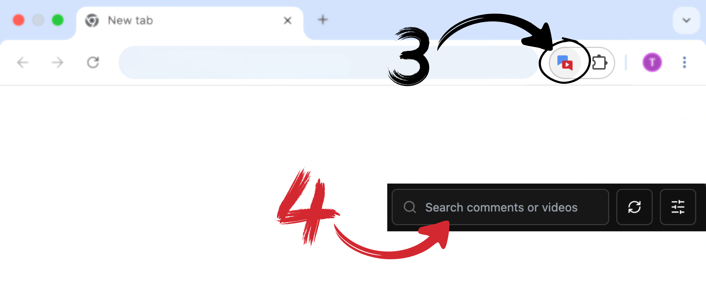

Keep the extension one click away

- Click the puzzle icon in the Chrome toolbar.
- Find YouTube Comment History and click the pin icon.

- Click the YouTube Comment History icon next to the address bar.
- Search, filter, and open your YouTube comments from the side panel.